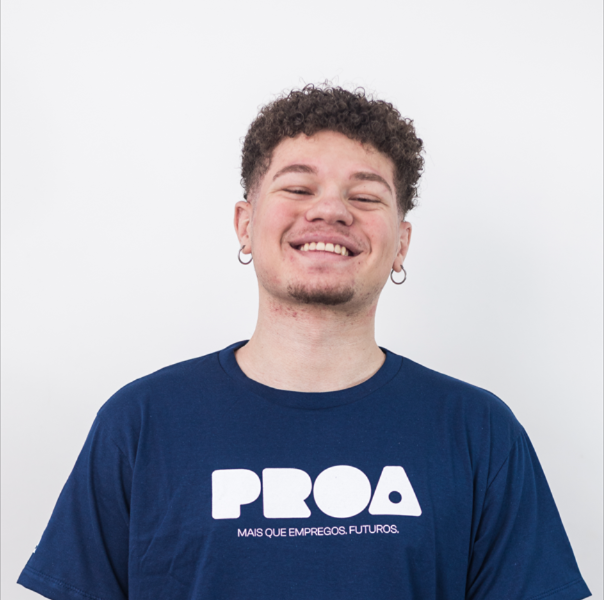

Prazer em Conhecer
Tenho 4 anos de experiência em desenvolvimento Web e já trabalhei com diversas tecnologias ao longo da minha trajetória. Participei de projetos que transformaram ideias em soluções digitais e agora estou construindo meu mapa de carreira como Líder de QA. Conhecimento é minha paixão — acredito que ter vontade de aprender é a essência de tudo .
Baixar o meu CVMapa de Carreira
Desenvolvedor FullStack
Quero dominar o ciclo de vida do desenvolvimento para criar códigos limpos, escaláveis e, acima de tudo, testáveis. Ao atuar no Front-end e Back-end, busco compreender a integração entre sistemas e como garantir a integridade dos dados desde a interface até o banco de dados.
Soft Skills exigidas para essa carreira:
- Capacidade de prever cenários de erro durante a escrita do código.
- Habilidade para explicar lógicas complexas para outros desenvolvedores.
- Lidar com a depuração de bugs complexos em diferentes camadas da aplicação.
Roadmap de Aprendizado:
- JavaScript/TypeScript
- Node.js
- React/Angular
- SQL/NoSQL
- Unit Testing
- Clean Code
SDET (Software Development Engineer in Test)
Como SDET, meu foco é tratar o teste como um produto de software. Desenvolvo frameworks de automação robustos que não apenas encontram bugs, mas aceleram o processo de entrega (CI/CD). Utilizo meu conhecimento de Fullstack para realizar testes de caixa branca e garantir a qualidade da arquitetura.
Soft Skills exigidas para essa carreira:
- Identificar falhas sutis em fluxos de integração ponta a ponta.
- Buscar constantemente formas de eliminar tarefas manuais repetitivas.
- Atuar como ponte entre as necessidades de negócio e a execução técnica.
Roadmap de Aprendizado:
- Cypress/Playwright
- Selenium
- CI/CD (Jenkins/GitHub Actions)
- API Testing
- Docker
QA Lead (Líder de Qualidade)
Atuo como o guardião da qualidade e mentor técnico do time. Minha experiência como desenvolvedor me permite dialogar de igual para igual com a engenharia, definindo padrões de excelência e métricas de sucesso. Lidero a estratégia de QA garantindo que a qualidade seja responsabilidade de todos, do código à entrega final.
Soft Skills exigidas para essa carreira:
- Capacidade de desenvolver as habilidades técnicas de outros QAs e DEVs.
- Alinhar os processos de teste com os objetivos e prazos do negócio.
- Avaliar riscos e decidir o momento certo para o lançamento de uma funcionalidade.
Roadmap de Aprendizado:
- Gestão de Pessoas
- Metodologias Ágeis
- Métricas de QA (KPIs)
- Test Strategy
- Risk Management
Soft e Hard Skills
Afinidade com as seguintes tecnologias e técnicas:
Frontend
-
Angular
-
React
-
JavaScript
-
Node.js
-
HTML/CSS/
Backend
-
Python
-
Java
-
PHP
-
WordPress
Outras
- DevOps
- Code Review
- Git
- Excel
- Word
- WordPress
Idiomas
- Português (Nativo)
- Inglês (Intermediário)